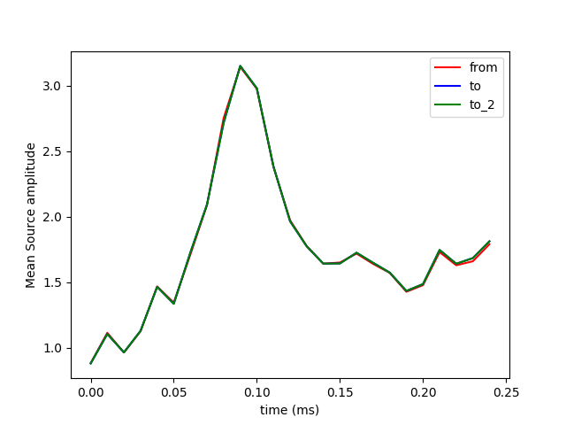

A source estimate from a given subject ‘sample’ is morphed to the anatomy of another subject ‘fsaverage’. The output is a source estimate defined on the anatomy of ‘fsaverage’
# Authors: Alexandre Gramfort <alexandre.gramfort@telecom-paristech.fr>
# Eric Larson <larson.eric.d@gmail.com>
#
# License: BSD (3-clause)
import numpy as np
import matplotlib.pyplot as plt
import mne
from mne.datasets import sample
print(__doc__)
data_path = sample.data_path()
subject_from = 'sample'
subject_to = 'fsaverage'
subjects_dir = data_path + '/subjects'
fname = data_path + '/MEG/sample/sample_audvis-meg'
src_fname = data_path + '/MEG/sample/sample_audvis-meg-oct-6-fwd.fif'
# Read input stc file
stc_from = mne.read_source_estimate(fname)
# Morph using one method (supplying the vertices in fsaverage's source
# space makes it faster). Note that for any generic subject, you could do:
# vertices_to = mne.grade_to_vertices(subject_to, grade=5)
# But fsaverage's source space was set up so we can just do this:
vertices_to = [np.arange(10242), np.arange(10242)]
stc_to = mne.morph_data(subject_from, subject_to, stc_from, n_jobs=1,
grade=vertices_to, subjects_dir=subjects_dir)
stc_to.save('%s_audvis-meg' % subject_to)
# Morph using another method -- useful if you're going to do a lot of the
# same inter-subject morphing operations; you could save and load morph_mat
morph_mat = mne.compute_morph_matrix(subject_from, subject_to,
stc_from.vertices, vertices_to,
subjects_dir=subjects_dir)
stc_to_2 = mne.morph_data_precomputed(subject_from, subject_to,
stc_from, vertices_to, morph_mat)
stc_to_2.save('%s_audvis-meg_2' % subject_to)
# View source activations
plt.plot(stc_from.times, stc_from.data.mean(axis=0), 'r', label='from')
plt.plot(stc_to.times, stc_to.data.mean(axis=0), 'b', label='to')
plt.plot(stc_to_2.times, stc_to.data.mean(axis=0), 'g', label='to_2')
plt.xlabel('time (ms)')
plt.ylabel('Mean Source amplitude')
plt.legend()
plt.show()
Total running time of the script: (0 minutes 11.250 seconds)
Download Python source code: plot_morph_data.py